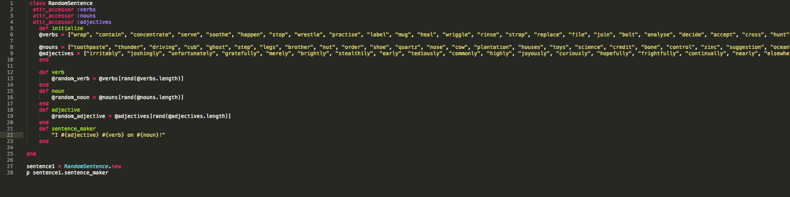

Ruby Classes
February 15, 2015
Classes in Ruby:
This weeks technical blog topic is on Runy Classes.
What is a ruby class?
Classes allow you to group methods and then initialize new instances of that class to create invidual objects that operate similarly.
Class Methods: Methods within classes can utilize variables accross methods by utilizing the instance variable - assigning that veriable: @variables = variables.
Let us look at the abive example
Each of these methods exist within one class with the sole purpose of making funny sentences. The intance variable is defined in the "def initialize" - in this case @verbs, @nouns, and @adjectives. This allows the viables scope to transcend and be interpolated into each of the follwoing methods. After each of the selected arrays are randomized one word is assigne to a vraible. With string interpolation placed into a sentence.
Here we have
Instance method verb in the class RandomSentence.
The class method sentence_maker in the class RandomSentence.
This class is initialized by creating and new instance of the class RandomSentence: sentence1 = RandomSentence.new
The class method Sentence_maker is called in the class Random Sentnece: p sentence1.sentence_maker
"I lightly accept on wall!"
"I unfortunately prick on zinc!"
"I brightly wrestle on north!"
"I righteously rinse on pies!"
Real World?
Chris Pine: "Do you perceive it as peopled with things, each of which has tasks to do and waits for someone to request the task? If so, you may conclude that object-oriented languages model the world best."
Does this type of programming mirror the real world? Depends on your perspective.